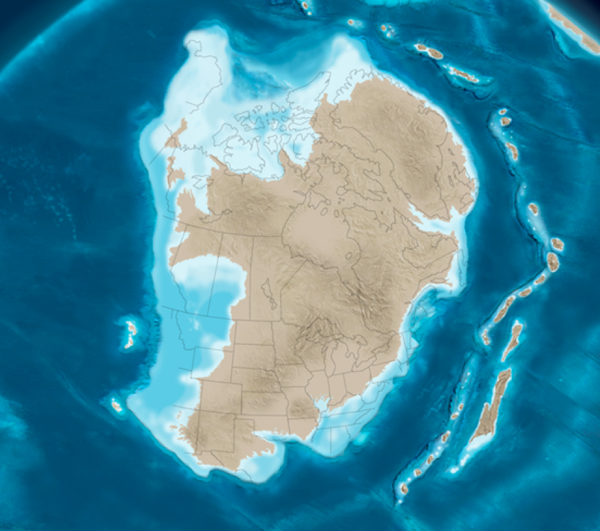
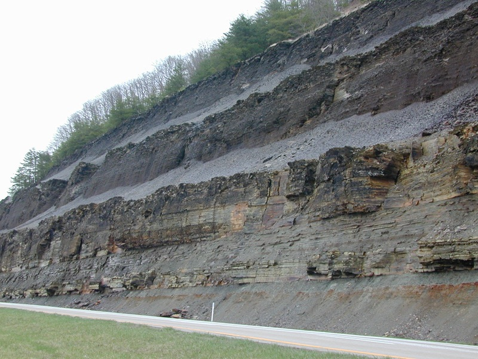
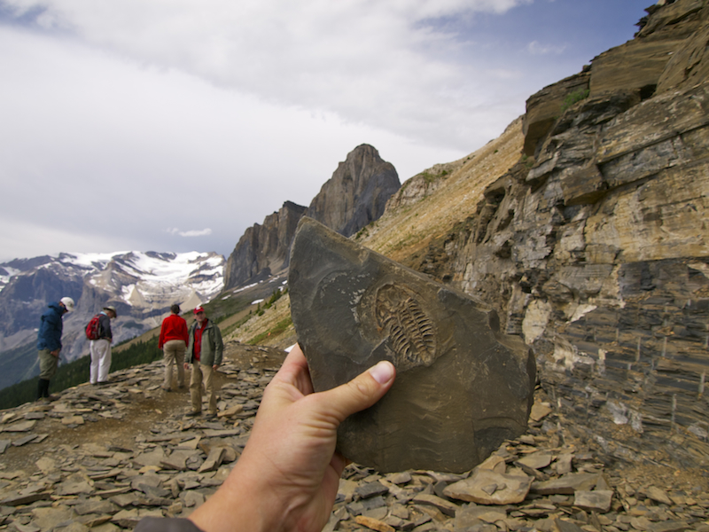
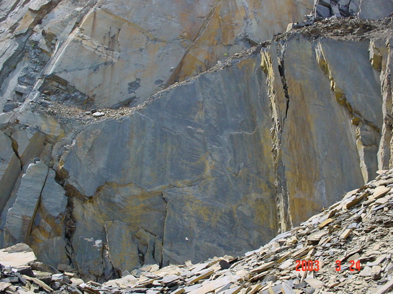
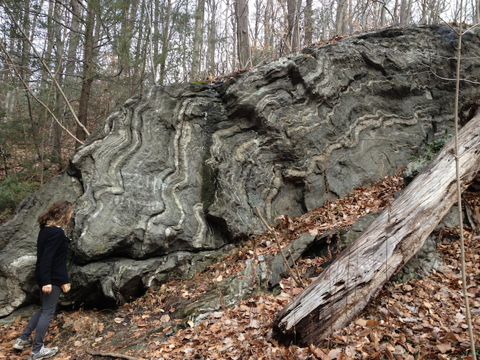
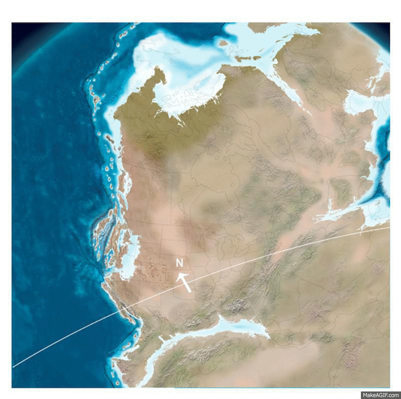
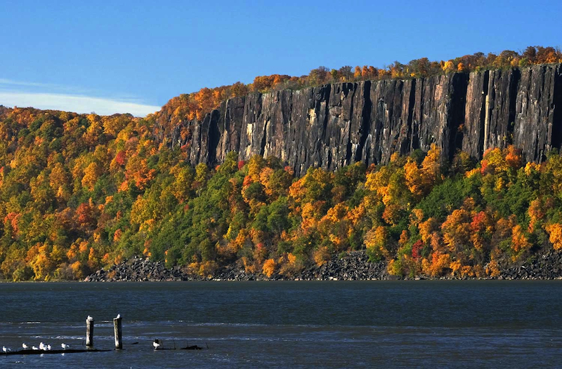
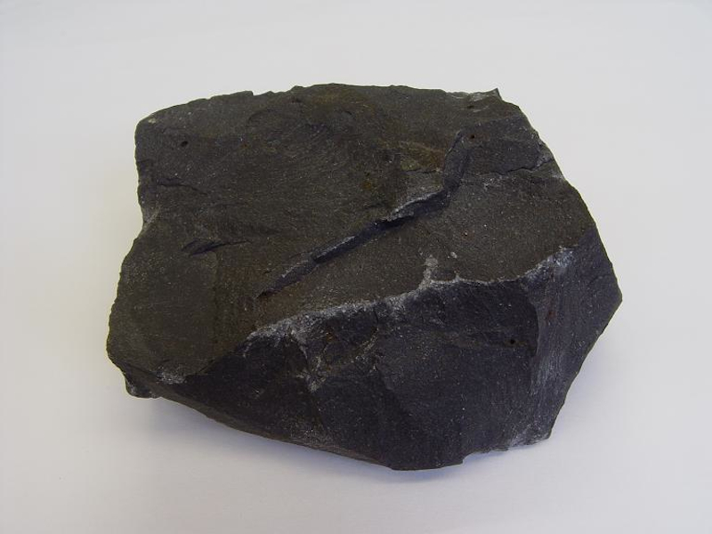
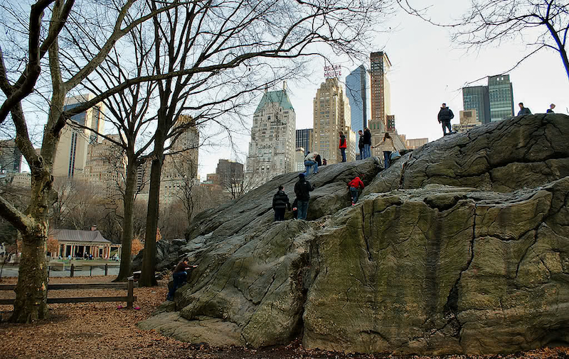
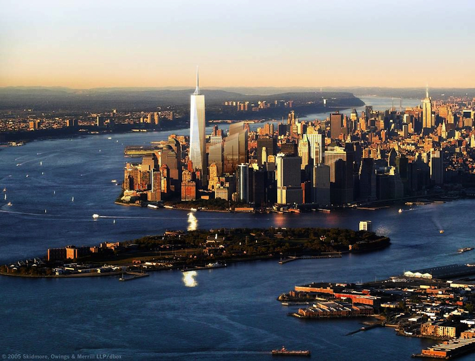

AIS Earth Science: Timeline of New York City Geology
The bedrock and topography of New York City has been forming for hundreds of millions of years, through the combined action of plate tectonics (driven by the Earth's internal heat energy) and weathering/erosion (driven by solar energy.) This presentation will help you prepare for our trip to NYC in October

Plate Tectonics
The difference in temperature between the hot, malleable asthenosphere and the cooler lithosphere is what drives convection of rock that causes plate tectonics -- the insanely slow movement of lithospheric plates that builds mountains, creates and destroys seafloor, generates earthquakes and volcanoes, and moves minerals through the rock cycle

About 500 million years ago . . .
Notice that NYC is just off the coast of ancient North America.
Also, notice the island chain that is further to the east.

Sediment weathered from ancient North American rock and was eroded offshore by rain and rivers and wind. Watch the animation below to see how largest particles (gravel) are deposited close to shore where the water flow is fast, while the smallest particles (clays) are deposited further offshore where the water is quieter. If no images shows, please refresh the page. Press "play" to start the animation (Chrome seems to have a difficult time loading this animation.)
Over geologic time, the clay deposited well offshore was
compacted and cemented into a sedimentary rock called shale.

Shale is a very brittle rock and can be easily split apart to reveal
fossils of ancient life forms that were buried in the ancient mud.

For over 200 million years . . .
Island chains and continents slammed into ancient North America, burying the shale many miles under the surface, where it experienced incredible heat and pressure. Supercontinent Pangea formed about 300 million years ago.

These mountain building episodes transformed sedimentary shale into metamorphic slate and schist. Click the arrow to start video
Here is a cliff of metamorphic slate formed from when shale was subducted to great depths by mountain building plate collisions. Subsequent uplift, weathering and erosion has exposed it at the surface.

In regions where slate was subjected to very high temperatures and pressure (but not high enough to melt the rock), the slate was transformed into a metamorphic rock called schist. The wavy lines are characteristic of schist.

About 200 million years ago . .
Supercontinent Pangea began to split apart, creating the Atlantic Ocean. Magma from the mantle welled up into cracks in the stretched lithosphere, cooling near the surface to form vast expanses of basalt, now found in eastern North America, western Africa and eastern Central and South America.
An example of such basalt can be found along the Hudson River. This basalt is known as the Palisades, French for "high fence."

Basalt rock up close and personal :)

In the last few million years . .
Mile high glaciers extended south to cover NYC during several ice ages. The scouring action of glacial advance and retreat severely eroded the ancient mountains along the east coast of North America, down to merely large rock outcrops visible at the surface.
Double click the image to replay the animation
Umpire Rock and other outcroppings in Central Park are all that remains of a once tall mountain

Boulders picked up by the glacier and dragged along the bottom of the glacier far from their originationed scoured large grooves into Umpire Rock. These boulders are known as "glacial erratics."
15,000 years ago, at the end of the last ice age . . .
NYC is a global port city because its wide, deep harbor is connected to the ocean. The final retreat of the last ice age produced a massive flood that broke through the glacial morrain that once connected Long Island with Staten Island, at a site known as The Narrows. Watch the video below to learn more!
Today . . .
New York City is one of the worlds great cities, thanks to the hard Manahattan schist into which skyscrapers are anchored and the wide and deep New York Harbor which connects her to the ocean :)
